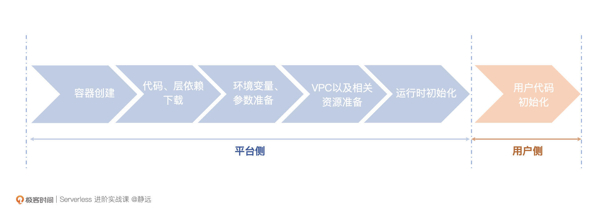
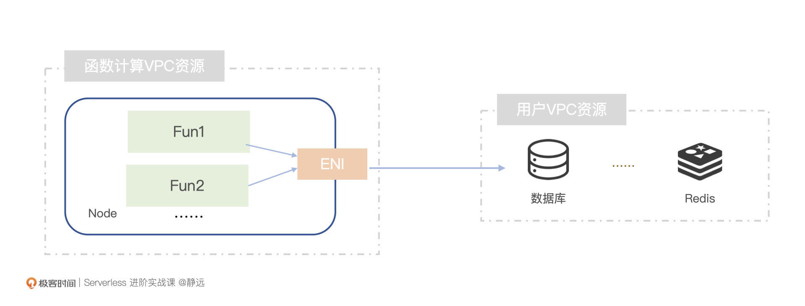
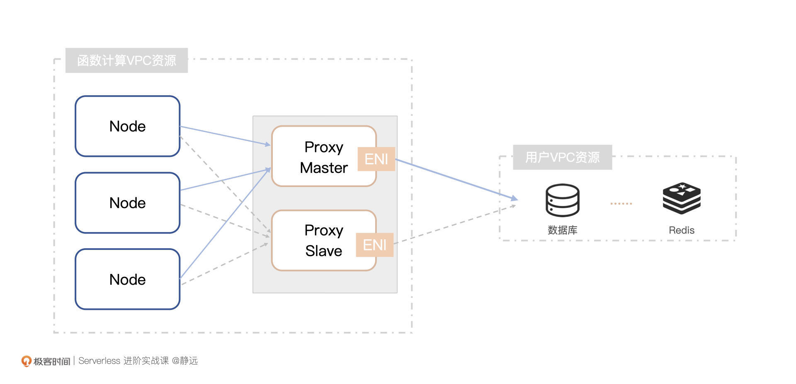
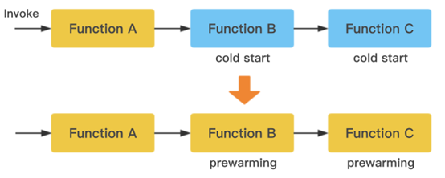
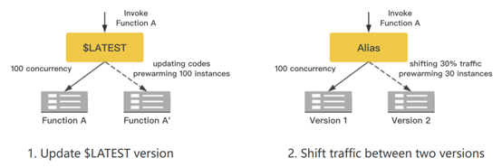
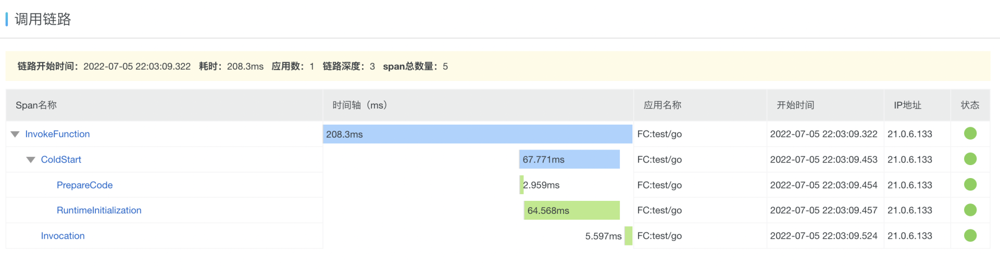
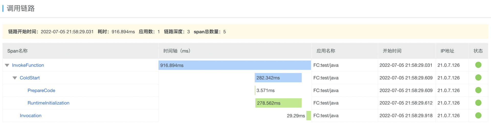

- 00 开篇词 Serverless是降本增效浪潮下的必然选择.md.html
- 00 思维构建 如何在新赛道下进阶Serverless能力？.md.html
- 01 生命周期：函数计算的基本流程是如何执行的？.md.html
- 02 触发器：如何构建事件源与函数计算的纽带？.md.html
- 03 高级属性：应对生产级别的应用，你需要掌握哪些技能？.md.html
- 04 冷启动：如何加快函数的第一次调用过程？.md.html
- 05 扩缩容：如何应对流量的波峰波谷？.md.html
- 06 流量转发：函数在不同情形下是如何执行的？.md.html
- 07 运行时（上）：不同语言形态下的函数在容器中是如何执行的？.md.html
- 08 运行时（下）：不同语言形态下的函数在容器中是如何执行的？.md.html
- 09 小试牛刀（一）：如何利用函数之间的调用解决业务问题？.md.html
- 10 小试牛刀（二）：如何突破VPC网络的速度限制？.md.html
- 11 WebIDE：如何让函数远离繁琐的本地开发模式？.md.html
- 12 编排：如何协调多任务的运行？.md.html
- 13 可观测（上）： 如何构建多维度视角下的Serverless监测体系？.md.html
- 14 可观测（下）： 如何构建多维度视角下的Serverless监测体系？.md.html
- 15 选型：不同阶段的数据应如何存储？.md.html
- 16 动手体验（一）：如何实现业务高效率地开发上线？.md.html
- 17 动手体验（二）：如何在云函数场景下实现一个有状态的服务？.md.html
- 18 实战指南：Serverless沙场老兵的一线使用经验.md.html
- 19 实战进阶（一）：Serverless “连接器” 的能力到底有多大？.md.html
- 20 实战进阶（二）：如何基于智能音箱开发一个BOT技能？.md.html
- 21 实战进阶（三）：传统的服务如何迁移到Serverless平台？.md.html
- 22 私有云：赛马时代的Serverless核心引擎谁能胜出？.md.html
- 23 实战进阶（四）：如何从0到1进阶一个开源引擎？.md.html
- 24 实战进阶（五）：如何从Serverless引擎蜕变成一个Serverless平台？.md.html
- 结束语 在实战中把握事物本质，不断革新.md.html
- 捐赠
04 冷启动：如何加快函数的第一次调用过程？
你好，我是静远。
前面几讲，我们基本上都是在谈Serverless的“好处”或者如何“用好”Serverless。那么Serverless有没有不完美的地方呢？
带着这个问题，我今天就来跟你聊聊它的一个瑕疵——“冷启动（Code Start）”。这个问题比较重要，为什么呢？因为不论是面对私有化企业还是公有云上的客户，大家首先问到的，通常都是和冷启动相关的函数性能问题。冷启动关乎到服务的时延等稳定性问题，进而会影响到用户使用服务的体验。在“即时时代”的今天，这是一个不可忽视的问题。
这节课，我将通过分析冷启动存在的原因、冷启动的过程，从平台和开发者的角度，带你了解如何加速函数的启动，掌握这里面的优化手段。
冷启动是什么？
在前面的课程中，我们知道，当请求被调度到函数实例上时，如果这个函数实例在上一次执行完代码后没有被回收，那么接收到请求后只需要复用这个实例进行代码的执行即可，这个过程被称为热启动过程。
如果服务是首次请求，或者是容器实例在服务请求后被回收了，就会触发冷启动。那么，冷启动具体是怎么工作的呢？
冷启动都有哪些步骤？
业界中，云厂商或者开源项目因为优化手段的不同，导致冷启动耗时或多或少会有些不一样，但基本的原理是差不多的。我们看一下冷启动都有哪些步骤。

第一步，容器创建。这一步通常会体现在扩缩容过程，当所有容器实例都在处理请求时，就需要向集群申请创建新的容器。
这里需要提一下，函数计算平台通常会支持多种语言的运行时，这些运行时一般来说会打包一个镜像，以DeamonSet的方式运行在Kubernetes集群中。我们在冷启动的时候，会根据不同的参数请求，动态挂载所需的运行时到对应的运行路径下。这个运行的过程，我没有体现在图上，而是把它算作资源调度层面了。
第二步，代码、层依赖下载。这一步应该是整个冷启动耗时比较长的过程。函数计算本身并不具备持久化的能力，代码包和层依赖通常都是从其他存储服务端拉取。因此，这一步的耗时会受到用户上传代码包大小、网速等因素的影响。当然，代码包通常是压缩包的形式，下载到本地后，还需要解压。
第三步，环境变量、参数文件准备。主流的函数计算平台往往提供了环境变量注入的能力，这个过程就发生在冷启动阶段。除此之外，运行时以及容器本身可能还需要准备一些参数配置文件等，这个过程耗时相对较短，我们可以暂时不关注这块的优化。
第四步，用户VPC以及相关资源准备。如果用户还为函数接入了私有网络，那么还需要为容器进行一些VPC网络打通的初始化工作。同时，如果用户使用了类似分布式文件系统这类功能，还需要进行挂载，也会产生一部分额外耗时。
第五步，运行时初始化。通常指的是云厂商标准的Runtime环境的启动过程。这一步受编程语言类型的影响比较大，比如Java类型的代码由于要启动JVM，启动相对其他语言就比较慢。
第六步，用户代码初始化。这一步有的时候和运行时初始化容易混淆，为什么这么说呢？比如编译型的语言，打包后就是一个完整的可执行程序，在运行时启动的时候，就已经有一部分工作加载起来了。那么，如果是解释型语言，我们就可以把它理解为用户代码包的加载过程。
因此，针对这一步，我们可以理解为用户的自定义业务逻辑代码的加载，某些业务逻辑init的过程，比如写在Handler之外的数据库连接的创建、Handler方法内的缓存初始化等。
看到这里你可能会有一个疑问，如果使用的是公有云的函数计算平台，一旦代码包比较大，就会增加整个调用链的耗时，那么每次冷启动执行的过程，会不会都额外产生费用呢？
实际上是不会的，你可以看到，上图中我专门区分了平台侧和用户侧两部分耗时，函数的计费都是从程序开始执行开始计算，也就是从第六步开始收费。即使是Java这种启动较慢的运行时，也只是你感觉慢了，但费用并没有多收。
影响冷启动时长的因素有哪些？
六个步骤这么说下来，冷启动（Cold Start）的耗时大部分和以下4个方面有关。
- 资源调度和容器创建过程： 一般在秒级别时间完成；
- 代码和依赖层的下载过程：取决于代码大小以及是否有加速，一般从毫秒到秒级别不等；
- VPC网络的打通过程：主要是弹性网卡和路由下发耗时，通常在秒级别；
- 运行时与用户代码初始化过程：和用户比较贴近，依据不同的语言，启动时间会有所影响，大概在毫秒到秒之间不等。
从上述的分析，我们基本可以看出，优化冷启动的手段不是一方的事情，需要平台和用户双方努力去完成，遵循的逻辑就是“哪里慢就让哪里快”。下面，我们一起让“慢”的地方“快”起来。
平台侧的优化手段
细心的你应该能看到，在这张图里，我将不同的阶段用平台侧和用户侧两个阶段进行了标识。那么首先，我们按照函数实例加载运行的时间顺序来看看平台侧的优化。
资源调度和容器创建
我们知道，容器启动时一般会先检查本地有无相关镜像，如果没有的话，需要从远端仓库拉取，而函数所处的容器环境通常都是一个Alpine或者Ubuntu之类的基础镜像，应用层的资源对象则会基于基础镜像之上进行打包，如果出现远端拉取的情况，还是比较耗时的。
传统容器运行需要将全量的镜像数据下载后再解压，一方面导致容器启动耗时较长，另一方面也可能因为集群规模过大，下载解压环节造成了较大的网络、磁盘读写压力，进而导致大规模容器启动不符合部署预期。但实际上在启动容器时，可能又仅使用容器镜像内的部分数据。
镜像加速要解决的就是这种传统容器需要提前下载镜像再启动导致耗时较长的问题。一般业界会从两个路径入手。
- 按需加载：使用加速镜像版本，配置加速规则和标签，通过按需加载的模式，免于全量下载镜像，避免带宽浪费和分发效率的影响；
- P2P加速：利用计算节点的内网带宽资源，在节点之间分发镜像，降低镜像仓库的压力。
另外，头部的云厂商，还会通过启用多镜像仓库，进一步缓解单仓库的存储和服务压力，来进一步提升资源调度和下载速度。
代码和层依赖下载
在准备好基础资源和容器之后，我们来看代码和层依赖相关的加速方法。它们或多或少和用户也有一些联系，这里，我来给你分享三个常用的方法。
- 方法一：压缩包暂存
虽然平台不能直接动手操作用户的代码，但我们可以通过实现本地缓存来提高代码以及层依赖的获取速度。
在函数第一次冷启动处理某个请求时，会将代码下载到Node节点上，并通过特殊编码进行标记。那么，当Node上有其他函数实例需要使用这份代码时，可以根据标记码查看本地缓存是否存在，如果有的话，就直接将其挂载到函数实例对应的路径下，省去代码包再次下载的过程。
- 方法二：常用依赖的内置化
平台也可以根据普遍用户的使用场景，将一些常用的依赖提前内置化。比如Python做数据处理的NumPy、Panda，处理PDF的底层依赖Xpdf等。
这些常用的依赖一般都会在构造容器基础镜像时一起构建。这样，就能保证这些公共依赖在任何容器实例下，都不需要额外下载就能够直接使用。
- 方法三：极致压缩
我们还可以在用户创建函数时将代码包进行二次压缩，来让代码包变得更小。常见的方法是使用squashfs这种高度压缩的文件系统进行处理，它甚至可以将几个G的文件压缩成几百M。
跨VPC网络加速
一般从平台的角度来看，函数运行在一个专有的VPC集群内，如果我们的云函数需要和用户VPC集群内的资源（如Elasticsearch、Redis等）打交道，该怎么办呢？
原来业内比较传统的方式，是通过动态创建弹性网卡ENI来实现跨VPC的访问。这样做有3个比较明显的缺点：
- 弹性网卡的创新耗时比较久，导致冷启动耗时急剧增加；
- 弹性网卡占用用户VPC的IP资源，如果没有空闲的资源，会导致创建失败；
- 造成弹性网卡较大的浪费。

那么我们可以怎么改进呢？目前，我比较推荐在集群VPC内部创建代理的方式。这个方式的核心在于IP隧道技术的使用，使得平台可以在保持函数原始目标IP地址的情况下，将流量通过Proxy代理节点的方式触达用户端VPC。
当然，函数平台会为关联了VPC的函数创建轻量的虚机，将弹性网卡绑定在代理虚机上，所有关联该VPC网络的流量最终都会通过代理进行发送。
为了确保服务的稳定，Proxy代理机通常采用主备的方式进行，正常情况下，Node的出口都是通过Master Proxy来代理请求。但Mater Proxy挂掉之后，平台会切换到Slave Proxy来转发。

这种方法，可以通过监听用户在Console关联VPC的操作时，提前进行创建。这样，在函数第一次请求处理的时候，由于只需要转发操作，就可以直接带来一个数量级的性能提升。
需要注意的是，这种方式虽好，但也有一定的瑕疵，我们需要额外消耗Proxy的Node资源。现在，你可以先想想它的具体实现方式是怎么样的，之后我也会在小试牛刀中跟你仔细来演练和讲解。
用户实例提前预加载
涉及到预加载的过程，一般都跟算法和策略有关系了。我在这里基于一线的经验给你提供一些思路，当然，在应用前，你还是需要根据自己平台的实际调用量和场景进行训练调优，才可以达到不错的效果。下面，我们可以看看一些常用的预加载用户代码实例方法。
第一种，基于函数互相调用的场景进行提前预测。这里，你可以参考腾讯函数计算公开的函数链式调用预热的方法。如下图所示，函数A调用B和C，我们可以根据它们之间的调用拓扑关系，提前进行预启动函数B和C。

第二种，基于函数的版本进行预测，如果流量版本1的流量比例是不足100%的，那么我们可以推测另一个占据流量的版本X，也应该加载起来。这种方式，在腾讯函数计算中也公布过。

第三种，我们还可以根据提前加载镜像的方式，部署到Node中，尤其是对于一些大镜像，如10G的镜像，提前分发，然后通过单机侧的Agent上报标记。流量到来时，直接分发到预加载过的Node的容器上，以快速应对函数的执行处理。
类似的方法还有不少，你还可以在机器学习和预测预取的思路上进一步思考，也欢迎你随时和我讨论。
到这里，我们平台侧的优化手段就讨论得差不多了。Serverless的技术在不停地进步，如果你是一个平台的开发人员，可以看看还有没有哪些方法可以更好地优化你的函数计算平台。当然，我们优化的时候，也不要忘了ROI。经营成本也是我们每个平台开发者需要关注的重点。
用户侧的优化手段
如果你是一个使用函数计算开发业务代码的人员，由于无法接触到底层基础设施，那还有没有你可以做的事情呢？选择一个功能完善、性能齐全、价格便宜的云厂商平台。是的，这绝对是你第一个要考虑的因素。因为平台会帮你做很多包括上述优化手段在内的事情，免去了你一大部分的烦恼。
那么，除此之外，我们自身还有没有可以优化的方向呢？我这里先给你列一下思考的5个方向：
- 合理控制代码包的大小；
- 选择性能较高的运行时；
- 成本可控范围内合理使用预留实例；
- 定时任务激活延时敏感较高的函数实例；
- 本地缓存的的合理利用。
你可以先暂停下来想一想，思考之后，我们开始逐一探讨。
合理控制代码包的大小
首先，代码包的拉取是整个冷启动过程最耗时的部分，即使是从内部网络进行下载，如果代码包特别臃肿，也会严重增加整个端到端的响应时长。
因此在函数部署之前，你可以手动删除执行过程中不必要的一些文件和依赖，让整个代码包尽可能的轻盈。
选择性能较高的运行时
在冷启动的耗时流程分析中，我们知道编程语言的类型会影响程序的启动速度。通常来说，Python、Node.js这类解释型语言的速度都会比较快，Golang这种编译形成的可执行二进制文件，加载速度也是非常快的。但像Java这一类需要在JVM中运行的程序，速度相对来说比较慢。
这里，我以阿里云函数计算平台为例，通过一个Hello World的程序来跟你直观地看一下语言运行时选取带来的差别。我选取了Golang和Java来做一个对比，通过Trace链路跟踪，结果如下图所示：


你可以很明显地看到，Java的冷启动耗时282.342ms，Golang耗时67.771ms，Java的冷启动耗时是Golang的4.166倍。另外，我们从调用链路还可以发现，在运行Invocation过程中，Golang的优势也是比较明显的。
成本可控范围内合理使用预留实例
目前主流的公有云函数计算平台（阿里云FC、腾讯云SCF、百度智能云CFC等）都提供了预留实例功能。
用户可以为某个函数根据实际需要申请固定数量的预留实例，每个实例都已经提前准备好函数代码，并且直到用户主动释放，都会始终处于常驻状态。这样可以随时以热启动的形式应对请求的到来。
这种机制下，函数平台会根据用户的申请为函数实例进行预留。当函数收到请求后，会优先被调度到预留实例上并且以热启动的方式进行处理。直到该函数的所有预留实例都处于工作状态，才会将请求调度到一个非预留的实例上以冷启动的方式执行。
不过，在使用预留实例来解决冷启动问题时，还需要考虑到闲置成本。因为平台需要额外为用户保留一部分资源，需要用户承担一定的费用，因此，使用者对预期的请求量要有一个合理的估计范围。
定时激活
如果觉得预留实例的费用不是很划算，我们还有一种方法。你可以通过一个定时触发器来提前预热你的服务，比如每分钟预热调用一次你的服务，由于函数平台通常会有一定的时间来保留“热”的容器，所以这种方法在一定程度上可以加快你的函数的响应。
有一点需要注意的，也是经常很多业务客户问我的一个事：我的函数涉及到业务处理，不能乱调用。
这时我们要怎么处理呢？其实，一个判断逻辑就可以解决。
def handler(event,context):
if event["exec"]==true:
doSomething()
else:
return
这个示例中，我通过一个“exec”的标志位，区分了预热和非预热的请求。当然，通过预热的方式，有的云厂商也做了定时触发策略的配置能力，进一步给你节省了成本。你也可以在实际场景中把这个方法和上面说的“预留实例”做个对比看看。
本地缓存的的合理利用
最后，在一些AI场景中，往往会涉及到数据训练任务。通常，我们的处理思路是将数据从远端拉倒本地再执行训练任务。但是如果我们在程序中加上缓存逻辑，每次拉取前都提前从本地临时磁盘空间判断数据是不是已经存在，就可以避免每次数据拉取造成的延迟了。
小结
到这里，我们针对冷启动的优化手段也聊得差不多了。最后，我来小结一下今天的内容。
今天我从冷启动存在的原因、工作原理入手，总结了冷启动存在的一些核心因素。从这些因素着手，以平台侧和用户侧的视角，我也提出了相关的优化手段。相信我在一线工作中积累的经验一定对你有所帮助。
冷启动的过程，包含容器创建、代码和层依赖的下载、环境变量与参数的准备、VPC网络及相关资源准备、运行时和用户代码初始化，一共6个部分。
如果你是一个平台的开发者，可以通过4种方法来优化冷启动的耗时时长。
- 镜像加速手段优化资源调度和容器创建：如果你使用的是云平台厂商的Kubernetes调度服务，还可以通过配置预加载脚本的方式来进一步并行处理你的容器镜像；
- 包的缓存、极致的压缩和内置化通用依赖：减少用户在运行时刻的依赖；
- 利用代理模式的方法进行VPC网络加速：VPC的网络加速通常只会在跨VPC的业务场景用到，通过IP隧道技术 + 代理模式的方法，让前几年一直比较诟病的网络延时问题降低到毫秒级别，这是Serverless函数计算领域的一个比较大的突破；
- 通过函数实例的预测算法，也能从一定程度上帮助用户解决冷启动问题。
如果你是一个业务开发者，我也在本节课给了你5个方向的指引。
- 合理控制代码包大小：这里需要我们尽量改掉原来在传统编码部分不好的习惯，尽可能精简代码；
- 选择性能较高的运行时：相信通过Golang和Java的对比，你也能直观地感受到语言选择带来的性能差异；
- 预留实例和定时预热：这两个方向，也是用户和平台相互协作的过程，更需要你灵活使用；
- 合理利用本地缓存：对于一些大的数据拉取场景，可以适当的使用缓存的方式，避免频繁拉取数据，造成的网络带宽和执行耗时，这不仅影响你的服务处理性能，还会额外增加费用成本。
Serverless的技术一直在不断的更新迭代，希望我今天的抛砖引玉，能带动你的思维，举一反三，想出更多的优化方法。
思考题
好了，这节课到这里也就结束了，最后我给你留了一个思考题。
你在实际工作中，还用到了哪些优化手段？或者，对哪些场景卡住了，需要一起来讨论交流的？
欢迎在留言区写下你的思考和答案，我们一起交流讨论。感谢你的阅读，也欢迎你把这节课分享给更多的朋友一起学习。
© 2019 - 2023 Liangliang Lee. Powered by gin and hexo-theme-book.